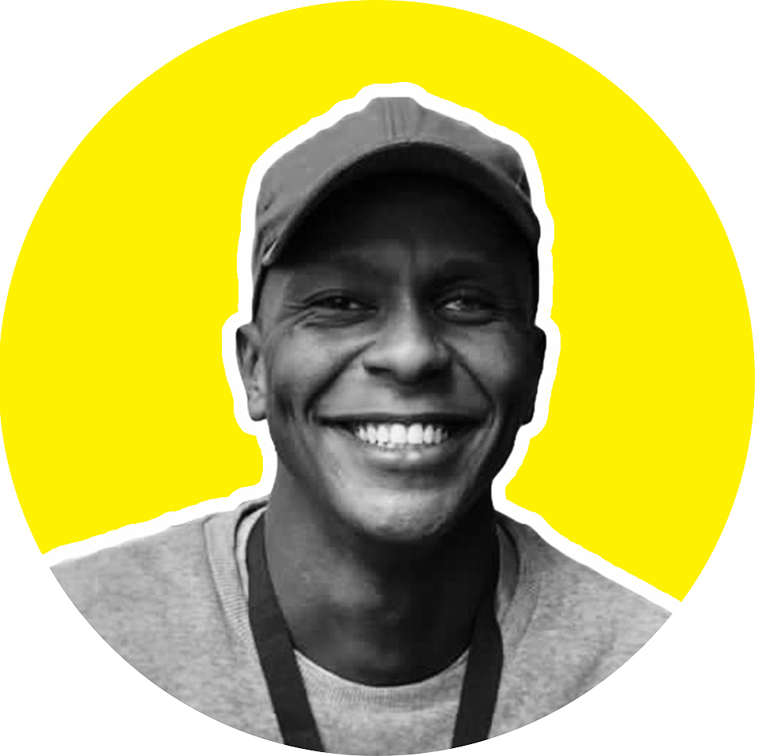
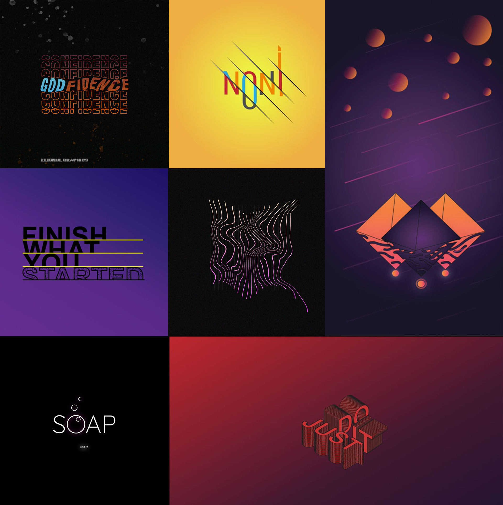

Hi, I'm Lungile Shadreck
28-year-old multidisciplinary creative
Certified programmer & web developer
Branding and visual design expertise
Adobe Creative Suite experience
Francistown, Botswana · Available for Projects


A short background on who I am and what drives the work.
I'm Lungile Shadreck — a 26-year-old multidisciplinary creative and IT tutor based in Francistown, Botswana. My journey started with graphic design, creating visuals for friends and local businesses, before evolving into a full-service creative practice spanning web development, brand identity, and digital strategy.
My first professional role was as an in-house Graphic Designer, where the scope quickly expanded to include social media management and marketing campaigns — and culminated in a complete company rebrand.
I later deepened my craft through the Adobe Suite — building a strong foundation across photo retouching, vector illustration, layout design, and visual identity systems.
My design sensibility tends toward the bold and textured — Grunge, Retro, and Surrealism — but I adapt fluidly to what each project demands. I'm currently involved in authoring a web platform designed to bring Francistown into the digital age.

Visual identity, branding, and print — across every scale of brief.
From street-level event posters to full corporate brand systems, the graphic design work spans a wide tonal range. The default style pulls from Grunge and Retro aesthetics — raw, textured, and unapologetically bold — but the toolkit extends to minimalist layouts and clean modern branding when the brief calls for it.
Adobe Photoshop · Illustrator · InDesign

Surrealism, conceptual imagery, and experimental visual identities.
Most of this work doesn't follow conventional rules — and that's entirely intentional. Surrealism creates space to experiment freely: impossible compositions, fabricated landscapes, and visual identities built for imaginary brands.
It's the studio space where style gets tested before it's applied to real briefs.

From static portfolios to dynamic, responsive platforms.
The flagship project is Calufia — a sustainable luxury fashion brand website combining brand identity, editorial UI/UX, and modern frontend development. Beyond that, the work covers city platforms, portfolios, business sites, and full-stack digital products.
HTML · CSS · JavaScript · Responsive Design
A multidisciplinary toolkit built through real-world delivery — not just theory.
Static and dynamic websites, responsive layouts, portfolios, business sites, and e-commerce builds.
Visual identity, branding systems, event posters, social media graphics, and print-ready artwork.
Content planning, branded visuals, platform management, and audience growth across Instagram, Facebook, LinkedIn, and TikTok.
Surreal compositing, photo retouching, and conceptual imagery built in Photoshop.
Clean vector art, logo design, icon sets, and illustration work in Illustrator.
Professional-quality narration, ads, and audio content. Distinct voice, clear delivery — and reportedly a rather nice accent.
Based in Francistown, Botswana — open to local and international projects, remote collaboration, and full-time opportunities.